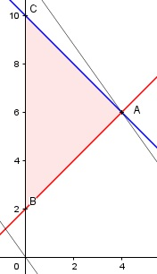

Aufgabe 88 Für welche natürlichen Zahlen x und y ist der Ausdruck A = 7x + 5y + 3 am größten, wenn x + y maximal = 10 und y mindestens um 2 größer ist als x? Bedingungen: x + y ≤ 10 y ≥ x + 2 x > 0 x ∈ ℕ y > 0 y ∈ ℕ Zielfunktion: A = 7x + 5y + 3 Randgerade 1: x + y = 10 Randgerade 2: y = x + 2

Die Eckpunkte A, B und C bilden das Planungsgebiet, das alle Ungleichungen erfüllt. Eckpunkt A ist der Schnittpunkt der Randgeraden 1 und 2: x + y = 10 (1) y = x + 2 (2) (2) in (1) eingesetzt: x + x + 2 = 10 |-2 2x = 8 |:2 x = 4 Eingesetzt in (2): y = 4 + 2 = 6 A(4|6). Die Parallele der Zielfunktion A liegt in A am höchsten --> Amax = 7 * 4 + 5 * 6 + 3 = 61 Für x = 4 und y = 6 wird A am größten.